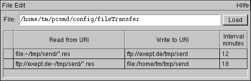

Mit dieser Applikation können verschiedene automatischer Dateiübertragungen eingerichtet werden. Es ist möglich, sowohl einzelne Quelldateien zu übertragen als auch die gesamten Dateien eines Quellverzeichnisses.
Die Dateiübertragung kann durch Angabe eines Intervals (Minuten) zyklisch wiederholt werden. Diese Angabe ist optional.
Die Quelldateien werden nach der Übertragung folgendermaßen umbenannt:
- file: verschiebt die lokalen Dateien in das definierte Unterverzeichnis history.
- ftp: benennt die remote Dateien in *.old um.

Abbildung: Automatische Dateiübertragungen bearbeiten
Alle Datei- und Verzeichnisangaben setzen sich aus URIs zusammen.
Ein URI (Universal Resource Identifier - universelle Quellenbezeichnung) besteht aus der Angabe des scheme, z.B. file oder ftp, gefolgt von einem Doppelpunkt. Dahinter kann - das ist von Protokoll zu Protokoll verschieden - eine Zusatzangabe zu einem lokalen Netzwerknamen möglich sein. Diese Angabe wird in zwei Schrägstriche // eingeschlossen. Bei den meisten Adressen gibt es keine solche Angabe, weshalb die beiden Schrägstriche dort einfach ohne Inhalt nebeneinanderstehen.
Hinter diesen Angaben folgt die Adresse des Hostrechners im Netz, auf dem sich die Datenquelle befindet. Das kann ein Domain-Name oder eine numerische IP-Adresse sein.
Dahinter folgt schließlich die lokale Pfadangabe zur gewünschten Datenquelle. Egal um welches Betriebssystem es sich dabei handelt - Verzeichnispfade werden stets durch einfache Schrägstriche getrennt. Es ist Aufgabe der Server-Software auf dem Rechner, die Pfadangaben korrekt aufzulösen. Auf diese Weise brauchen Sie sich keine Gedanken zu machen, welches System der angesprochene Rechner benutzt.
Für die URIs kann ein spezieller Editor geöffnet werden, der zur komfortablen Bearbeitung der einzelnen Komponenten konstruiert ist.
Auf dem Rechner können beliebige Dateien und Datenquellen angesprochen werden. Voraussetzung ist, dass sie über das angegebene Protokoll wie z.B. ftp unter der Adressierung erreichbar sind.
Ebenso kann eine Auswahl von Dateien mit einer bestimmten Dateiendung angegeben werden.
Beispiele für URIs:
Der Service wird mit Angabe einer Datei, aus der die Definitionen der Dateiübertragungszuordnungen gelesen werden, gestartet. Der Service hält sich dann die Liste mit den ausgelesenen Dateiübertragungszuordnungen und arbeitet diese der Reihe nach ab. Die Abarbeitung der Liste erfolgt automatisch nach einer definerten Pause immer wieder. Jedoch wird jedesmal zuvor geprüft, ob sich die Datei verändert hat, und folglich die Liste mit Dateiübertragungszuordnungen aktualisiert wird.
Beispiele für Dateiübertragungen:
1. Eine lokale Quelldatei /home/outgoing/test.dat soll in das lokales Verzeichis /home/incoming/ kopiert werden.
| Read from URI | Write to URI |
|---|---|
| file:/home/outgoing/test.dat | file:/home/incoming/ |
2. Eine lokale Quelldatei /home/outgoing/test.dat soll in das Verzeichis /home/incoming/ auf einem entfernten Rechnersystem kopiert werden.
| Read from URI | Write to URI |
|---|---|
| file:/home/outgoing/test.dat | ftp://www.remotehost.de/home/incoming/ |
3. Eine lokales QuellVerzeichis home/outgoing/ soll in das Verzeichis /home/incoming/ auf einem entfernten Rechnersystem kopiert werden.
| Read from URI | Write to URI |
|---|---|
| file:/home/outgoing/ | ftp://www.remotehost.de/home/incoming/ |
4. Eine lokales QuellVerzeichis /home/outgoing/ soll in das Verzeichis /home/incoming/ auf einem entfernten Rechnersystem kopiert werden, und alle 60 Minuten wiederholt werden.
| Read from URI | Write to URI | Interval |
|---|---|---|
| file:/home/outgoing/ | ftp://www.remotehost.de/home/incoming/ | 60 |
5. Alle Dateien mit der Endung .res eines lokalen QuellVerzeichnis in das Verzeichis /home/incoming/ auf einem entfernten Rechnersystem senden.
| Read from URI | Write to URI |
|---|---|
| file:/home/user/send/*.res/ | ftp://www.remotehost.de/home/incoming/ |